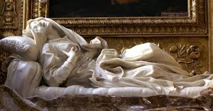

LA ESCULTURA COMO ARTE

DEFINICION
La escultura es una disciplina artística que se enfoca en la creación de formas tridimensionales utilizando materiales diversos como piedra, barro, madera, metal, y otros. El escultor manipula estos materiales para conformar volúmenes y espacios, transmitiendo un mensaje o idea a través de la obra.
Relación entre escultura y arte:
La escultura, como cualquier otra disciplina artística, se considera una forma de expresión creativa. A través de la manipulación de materiales y técnicas, el escultor busca comunicar, transmitir emociones, y reflexionar sobre la realidad.
Características de la escultura:
- Tridimensionalidad:
- Las esculturas ocupan un volumen y utilizan el espacio, creando efectos como el vacío, la perspectiva y la escala.
- Textura:
- La textura depende de los materiales y puede ser lisa, rugosa, suave, etc., creando efectos visuales y táctiles.
- Forma y volumen:
- La forma es la estructura principal de la escultura, mientras que el volumen es el espacio tridimensional que ocupa.
- Materia:
- Los materiales utilizados son una parte esencial de la obra, influyendo en su textura, color y peso.
Tipo de escultura:
- Escultura de bulto:Esculturas independientes que se pueden ver desde cualquier angulo.
- Escultura de relieve:Esculturas que sobresalen de una superficie, creando un efecto visual en profundidad.
- Escultura eestatuaria:Esculturas que representan figuras humanas,reales o imaginarias.
- Escultura cintetica:Esculturas que se muevn o dan la sensacion de movimiento.
-
- Escultura de sitio especifico:Esculturas diseñadas para un lugar especifico,interactuando con el entorno.